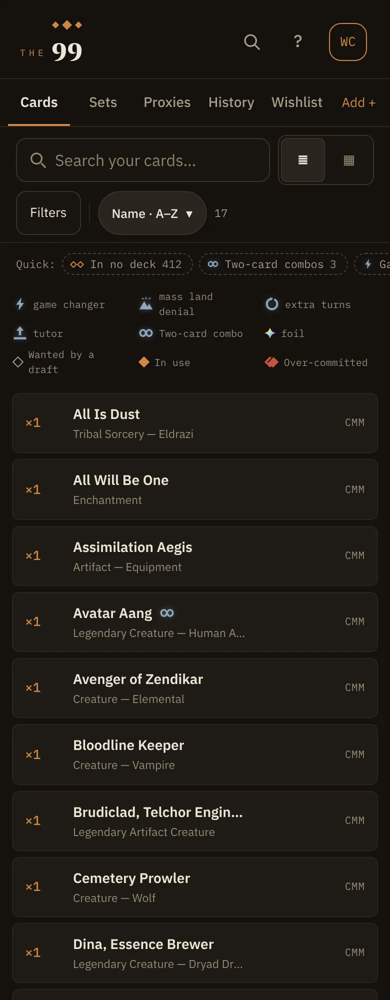
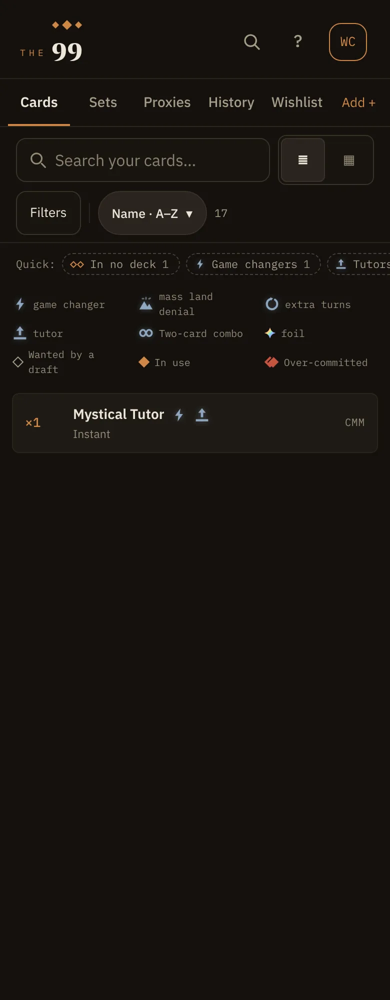
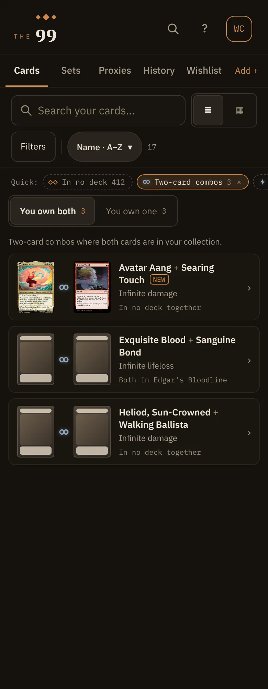
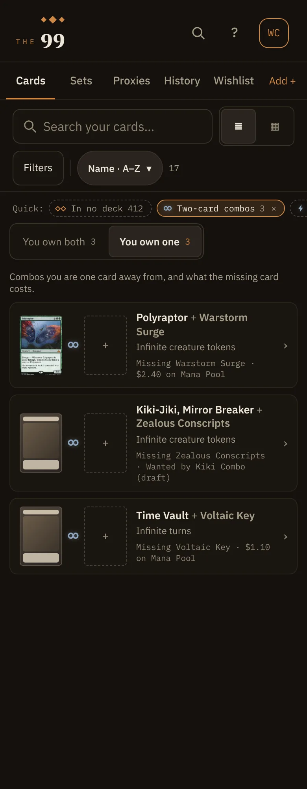

One 30px strip under Filters that scrolls sideways, with the same chip rules as desktop.
FULL COLLECTION

Seven chips, cut off at the right edge so it's clear the strip scrolls.ZERO CHIPS HIDDENThe sample collection has four chips.OTHER FILTERS ON

With blue instants on (one card, Mystical Tutor), the counts drop and the Blue and Instant chips sit past the hairline, off screen. That's Q2.COMBOS · OWN BOTH

The pressed chip is solid with a ×, and the list shows pairs.COMBOS · OWN ONE

The missing half shows as a dashed slot, with its price or a draft that wants it.